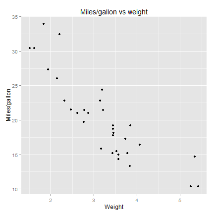
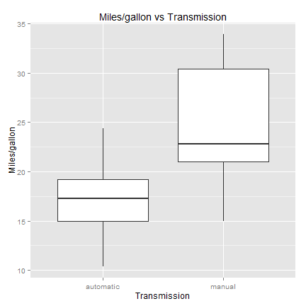
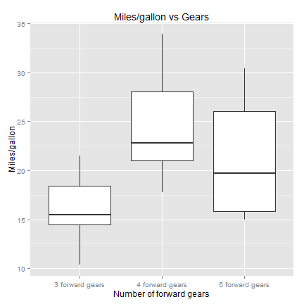

Want to buy a car which doesn't consume too much?
Which attributes of cars to look at?
Be cautious of car sellers, instead:
Use Miles per gallon application!
I want a big, heavy car which not consume too much!
require(ggplot2)
require(datasets)
data(mtcars)
qplot(wt, mpg, data=mtcars, main="Miles/gallon vs weight",
xlab="Weight", ylab="Miles/gallon")

Super, but I knew that! What's more important I want a car with manual transmission which consume not too much.
mtcars$am = factor(mtcars$am, levels=c(0, 1), labels=c("automatic", "manual"))
qplot(am, mpg, data=mtcars, geom="boxplot",
main="Miles/gallon vs Transmission",
xlab="Transmission", ylab="Miles/gallon")

:( Ok. But there should be a big number of forward gears, because I like it!
mtcars$gear = factor(mtcars$gear, levels=c(3, 4, 5), labels=c("3 forward gears", "4 forward gears","5 forward gears" ))
qplot(gear, mpg, data=mtcars, geom="boxplot",
main="Miles/gallon vs Gears",
xlab="Number of forward gears", ylab="Miles/gallon")
